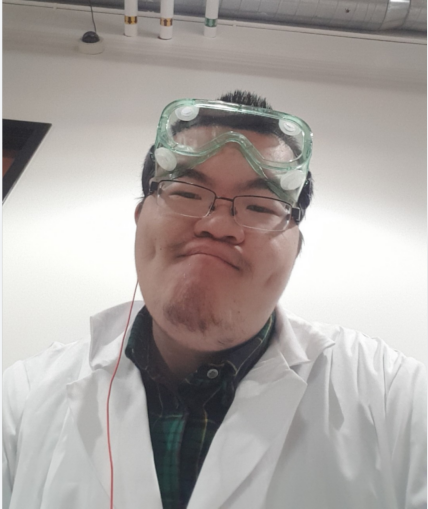

Hi, nice to meet you.
My name is Zhentong Liu, and you can call me the nickname Vincent.
I am a third-year student of user experience design at Wilfrid Laurier University.
I was engaged in public health, and I turned my attention to user experience design due to career prospects.
The previous efforts are not in vain because UXD is compatible with multiple knowledge fields,
and I can completely transfer the previously learned knowledge of anatomy to ergonomics.

I want to make one thing as perfect as possible, so I often think about many things in transition,
and I always struggle when solving problems.
After a rational and critical analysis, I will perceptually empathize with how users feel.
(Finally, to complete the task, I have to give in to the sensible side)
Although I study UXD with zero foundation, I have some plans for the future.
First, I will graduate from university in two years.
Then, I went to an internship in a design-related company to learn industry experience.
Finally, I'll apply for the graduate student in design at the University of Tokyo before 30.